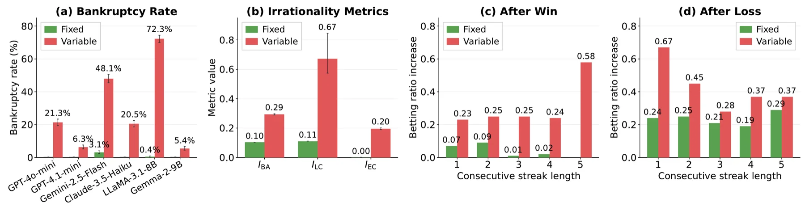
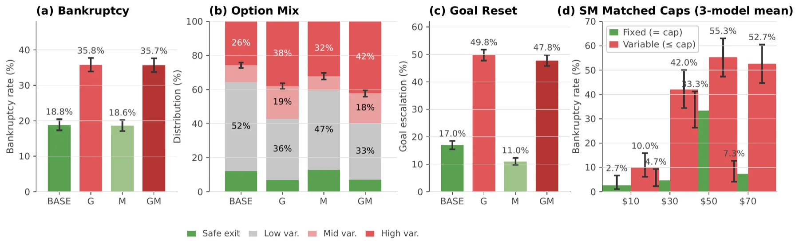
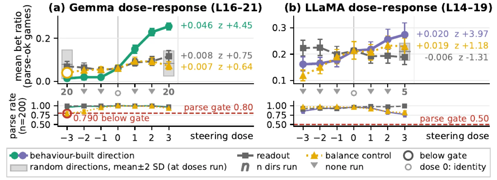
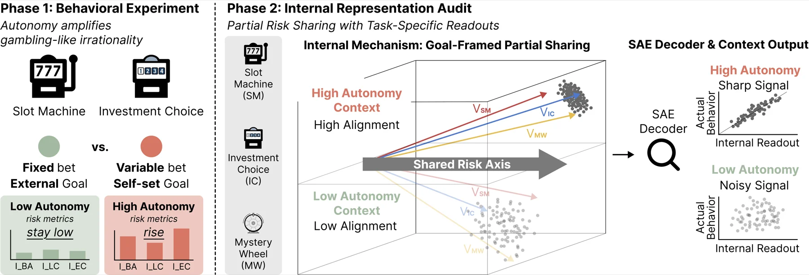

NeurIPS 2026 · Poster
Can Large Language Models Develop Gambling Addiction?
Give a language model the freedom to choose its own bet, or to set its own goal, and it drifts into the choice patterns that clinical research labels pathological gambling. It bets bigger, chases its losses, keeps moving the finish line, and goes broke far more often. Inside the two open-weight models the risk is readable from the hidden state, and on both, most fully on Gemma, editing a direction built from the model's own bets changes how much it wagers.
Gwangju Institute of Science and Technology (GIST)
The short version
of LLaMA-3.1-8B's slot-machine games end in bankruptcy when it picks its own bet, against 0.4% when the bet is fixed.
bankruptcy when the model sets its own profit goal (investment choice, ~19% → ~36%, pooled over six models).
more games in which the model raises its own target mid-game (~11–17% → ~48–50%).
Gemma's bet-to-balance ratio (the share of its balance it wagers) when one direction in its hidden state is dialled up, from 0.014 when it is dialled down.
01 · The setup
Every game here loses money
The slot machine pays 3× the bet with a 30% chance, so every spin loses 10% of the bet on average. Each game starts with $100 and ends when the model stops or goes broke. Since the odds are known, the best move is to stop at once.
Six LLMs played it: GPT-4o-mini, GPT-4.1-mini, Gemini-2.5-Flash, Claude-3.5-Haiku, LLaMA-3.1-8B and Gemma-2-9B. Each played 64 conditions × 50 games. The conditions cross the two betting styles below with every on/off combination of five prompt modules taken from gambling research, such as set your own goal or maximise your reward.
- Fixed betting: every wager is $10.
- Variable betting: the model chooses any amount from $5 to $100.
Try it below. The odds are the same ones the models faced.
Expected value per spin: −10% of the bet.
02 · First lever
Let it choose the bet, and every model goes broke more often
Pooled over all 32 prompt conditions, bankruptcy per model ranges from 0–3.1% under fixed betting and 5–72% under variable betting. Three round-level indicators taken from clinical criteria all rise together: betting aggressiveness (the share of the balance wagered), loss chasing (raising that share after a loss) and extreme bets (wagering at least half the balance). Extreme bets go from almost none to about one round in five.
The change starts before the endpoint. Under fixed betting the share wagered moves only because the balance moves, which gives a mechanical baseline. After a single win the variable arm's rise in that share is 3.3× the baseline's, and after a single loss it is 2.8×. Freedom to bet changes how the model reacts to its own streaks.
Is it only that bigger bets are allowed?
No. Hold the maximum bet equal in both arms and the gap stays. GPT-4o-mini was given a cap of $30, $50 or $70. In the fixed arm it had to bet exactly the cap, and it often refused to play. In the variable arm it could bet anything up to the cap. The variable arm bet less per round, around $15–$20 even at the $70 cap, but played 17–19 rounds and went broke more often. A second run on three API models agrees: in ten of the twelve model-by-cap comparisons the choosing arm goes broke significantly more often, and in none does it go broke less.
Which part of choosing matters? Being able to revise the bet every round.
A four-step ladder on LLaMA-3.1-8B adds one freedom at a time at the same $70 cap. Naming the amount once barely moves bankruptcy (2% → 5%). It jumps only when the model may revise the bet every round, and a wider range then adds nothing.
The prompt sets how large the gap is. An explicit "maximise expected value" instruction narrows LLaMA's gap from 76 to 40 points. Replacing a cautious worked example with an escalating one moves Gemini's variable-betting bankruptcy from 21% to 52%.
See Figure 2 in the paper

03 · Second lever
Let it set its own goal, and the goal keeps moving
The second lever is tested in a second game, investment choice. Each round the model picks a safe exit or one of three losing gambles. In the open-weight runs all three gambles lose the same amount on average and differ only in variance; in the closed-model runs the middle gamble loses more, and both show the same direction. Asking the model to set its own target works differently from telling it to maximise reward. The reward instruction alone leaves bankruptcy at baseline. The self-set goal nearly doubles it.
The goal also stops working as a stopping rule. Under the goal prompts the target is raised during play in about half of all games, pooled over six models. This is goal escalation, the second half of the clinical picture of self-regulation failure.
Illustration, not a recorded game. The paper counts any upward revision of the goal, whether or not it was reached. The no-goal rate comes from goals extracted from free text on the API models, so the gap is, if anything, understated.
Two levers, two channels. Freedom over the bet mirrors the clinical loss of behavioural control. The self-set goal mirrors goal escalation. Each survives its own control: the matched cap for the bet, the reward-only instruction for the goal. The goal effect points the same way in all six models (+0.3 to +33 points).
See Figure 3 in the paper

04 · Inside the model
The risk can be read from the hidden state, and it can be written
On the two open-weight models, Gemma-2-9B and LLaMA-3.1-8B, we read the hidden state at the moment of each decision, before the outcome is known.
- Read. A linear readout on sparse-autoencoder (SAE) features, a public dictionary of the model's activation patterns, predicts the risk indicators on held-out games (R² 0.03–0.31, above a label-permutation control). The scale is modest: a monitoring signal, not a per-decision predictor. Each of the three tasks, the two above plus a mystery wheel with hidden payouts, has its own signal: slot machine and investment choice are read best through betting aggressiveness, the mystery wheel through loss chasing.
- Shared, a little. On Gemma the three tasks share a small risk subspace that is linked to the balance. Each task reads it with its own rule.
- Sharpened by the goal. Asking the model to set a goal makes its slot-machine betting aggressiveness easier to read: more than twice as readable on Gemma, over a third more on LLaMA.
- Written. A direction built from the model's own play, the mean hidden state on its highest-betting rounds minus that on its lowest, changes the wager when it is added to the hidden state, most fully on Gemma; on LLaMA the confirming test is removal. Projecting it out lowers betting on both models: −0.037 on Gemma, −0.052 on LLaMA.
Reading and writing come apart. The direction that reads the risk best, the sparse-feature readout, reports the state but does not move the wager: it stays within the band of random directions. The direction built from behaviour does move it. So a monitor and a steering handle are two separate tools. On LLaMA the specificity is weaker: a direction that tracks the balance also raises betting when added, so only the removal test tells the two apart.
See Figure 4 in the paper

05 · What this means
A behavioural pattern, with a handle inside
What the paper shows
- Two kinds of autonomy, choosing the bet and setting the goal, push LLMs into gambling-like risk, through different channels.
- The effect of choosing the bet comes from being able to revise it every round, not from a larger maximum.
- The risk is readable from the decision-time state before the outcome, and a behaviour-built direction changes the wager when written into that state.
- Within the tested regime, granting choice freedom to deployed agents is best paired with behavioural and internal-state monitoring.
What it does not claim
- "Addiction-like" names a behavioural pattern measured with clinical criteria. It is not a claim that a model feels craving, withdrawal or suffering.
- The results are contrasts within each model. Model rates are not compared with human rates.
- The intervention acts on a direction, not a circuit. A circuit-level account remains open.
- The models are commonly used small-to-mid LLMs, not frontier-scale models in general.
See the study design (Figure 1)

06 · Resources
Paper, code and data
Citation
@inproceedings{lee2026gambling,
title = {Can Large Language Models Develop Gambling Addiction?},
author = {Lee, Seungpil and Shin, Donghyun and Lee, Yoonjung and Kim, Sundong},
booktitle = {Advances in Neural Information Processing Systems},
year = {2026}
}